■關於AutOCAD建立 新圖面時的 圖面測量單位設定，並沒有設定的方式，須靠 繪圖者本身 自行定義，而當定義好圖面單位時，關係著將來的出圖比例等規劃設定，如果您在模型空間內繪製並出圖，您要使用下列程序，然後再出圖。
正確出圖比例規劃，觀念+實作讓各位輕鬆上手~
可到論壇看圖文教學說明，也可參考出圖大師課程!
不管是模型空間出圖，還是配置空間出圖
了解後讓您輕輕鬆鬆完成出圖任務😁
一、繪圖者本身自行決定「圖面的測量單位」。
二、指定「圖面單位(UNITS)」的顯示型式。
三、在模型空間內以「實際比例 (1:1)」 繪製。
四、預先決定「圖紙尺寸」及「圖面比例」。
在 AutoCAD 中，您不必擔心在開始繪圖之前要先設定比例。雖然您最終要以指定的比例列印或出圖至圖紙，但要以 1:1 的比例在 AutoCAD 中建立模型。然而，在您開始一個圖面之前，必須首先決定要使用的圖面單位。
在 AutoCAD 中，以圖面單位來測量距離。在圖面中，一個圖面單位可能等於一英吋、一公釐、一公尺或一英哩。在開始繪圖之前，您要確定一個圖面單位所表示的長度，AutoCAD 中沒有確定圖面單位長度的設定。
也就是說你要自己決定 選擇圖面單位，以手繪圖來舉例:
剛開始畫圖時，若為地形測量圖，可能就決定一個圖面單位 = 一公里。若為鋼骨結構接合詳圖，那一個圖面單位 = 一公釐。
※已下方法適用於 AutoCAD 所有版本 ，並以單位:「公釐」及「公分」舉例說明：
一、繪圖單位：公釐
A.出圖前請先完成以下步驟:(單位:公釐)
模型空間建立新圖面時必須先決定測量系統、圖面測量單位、圖紙尺寸及圖面比例。
例:測量系統 = 公制。
圖面測量單位 = 公釐 (1個單位為1公釐)。
圖紙(圖框)尺寸 = A1 (841x594公釐)。
圖面比例 = 1:100 (圖紙 10 公釐 = 1 公尺)。
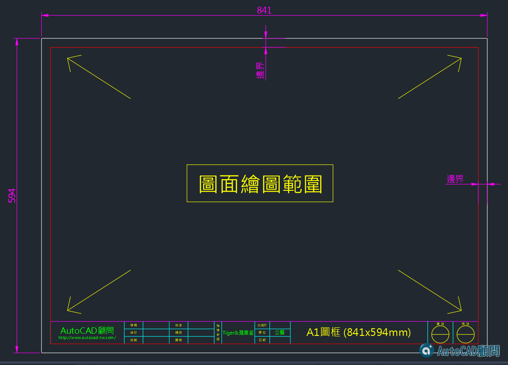
https://app.box.com/s/iy3jjacwwomlbhehpyaq
B.當圖面單位及圖面比例決定後，當繪製平面圖時牆壁厚度15公分，門寬度90公分：
在AutoCAD裡必須繪製時 牆壁厚度要繪製 150 個單位，門寬度要繪製 900 個單位。
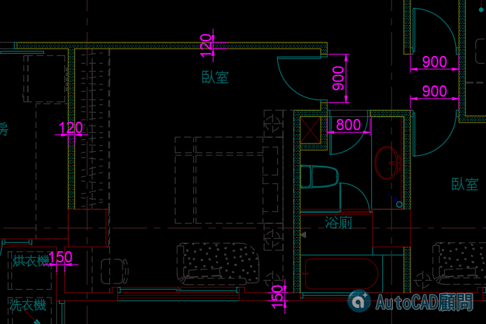
C.出圖方式:(單位:公釐)
由模型空間1:1作圖，繪製 A1 繪圖區大小為 84100x59400公釐 (841x594 放大100倍)。
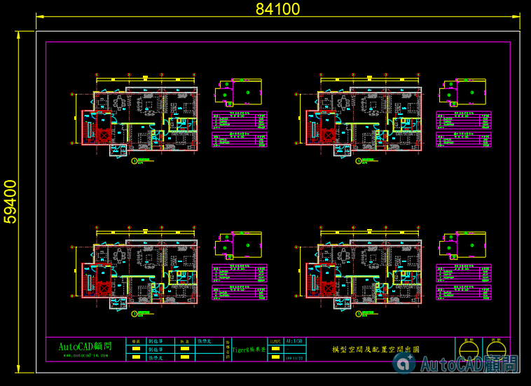
圖紙尺寸為 A1、出圖比例 為 1(公釐) : 100(單位)。
圖面比例(實際比例)為 1/100

在圖紙(配置)空間,繪製圖框 A1(841x594公釐)，建立視埠（圖面繪圖範圍），並將「視埠比例」調整為1/100。
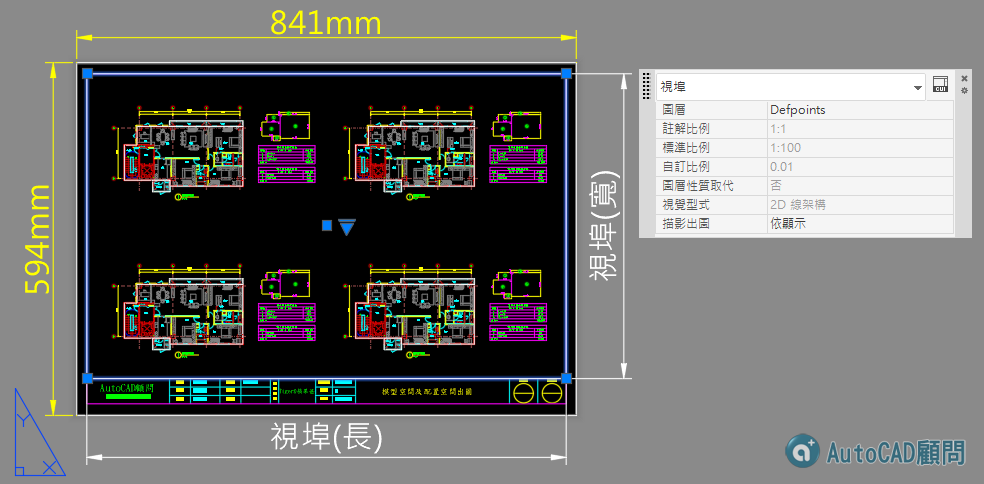
圖紙尺寸為 A1、出圖比例 為 1(公釐) : 1(單位)。
圖面比例(實際比例)為 1(公釐)/1(單位) x 1/100(視埠) = 1/100

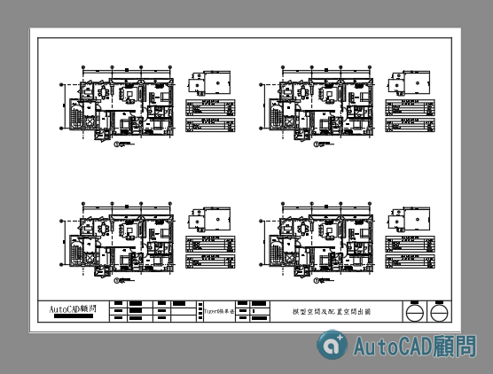
二、繪圖單位：公分
A.出圖前請先完成以下步驟:(單位:公分)
模型空間建立新圖面時必須先決定測量系統、圖面測量單位、圖紙尺寸及圖面比例。
例:測量系統 = 公制。
圖面測量單位 = 公分 (1個單位為1公分)。
圖紙(圖框)尺寸 = A1 (84.1x59.4公分)。
圖面比例 = 1:100 (圖紙 1 公分 = 1 公尺)。
B.當圖面單位及圖面比例決定後，當繪製平面圖時牆壁厚度15公分，門寬度90公分：
在AutoCAD裡必須繪製時 牆壁厚度要繪製 15 個單位，門寬度要繪製 90 個單位。
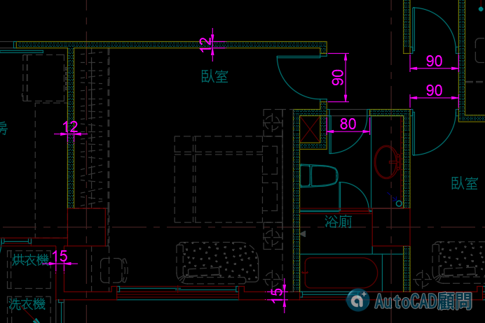
C.出圖方式:(單位:公分)
由模型空間1:1作圖，繪製 A1 繪圖區大小為 8410x5940公分 (84.1x59.4 放大100倍)。
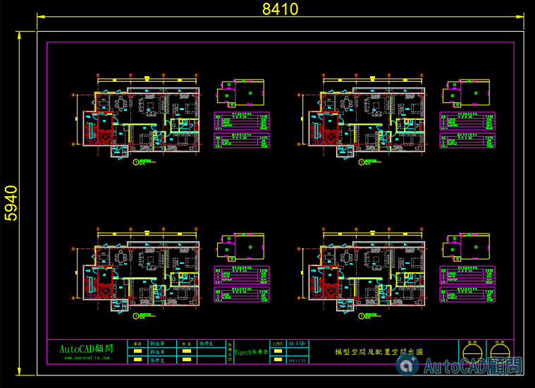
圖紙尺寸為 A1、出圖比例 為 10(公釐) : 100(單位)。
圖面比例(實際比例)為 1/100
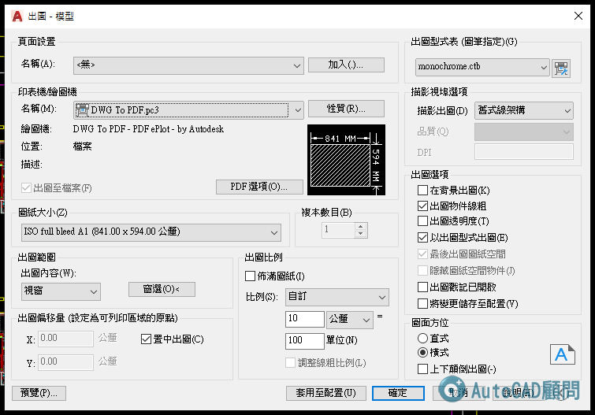
在圖紙(配置)空間,繪製圖框 A1(84.1x59.4公分)，建立視埠（圖面繪圖範圍），並將「視埠比例」調整為1/100。
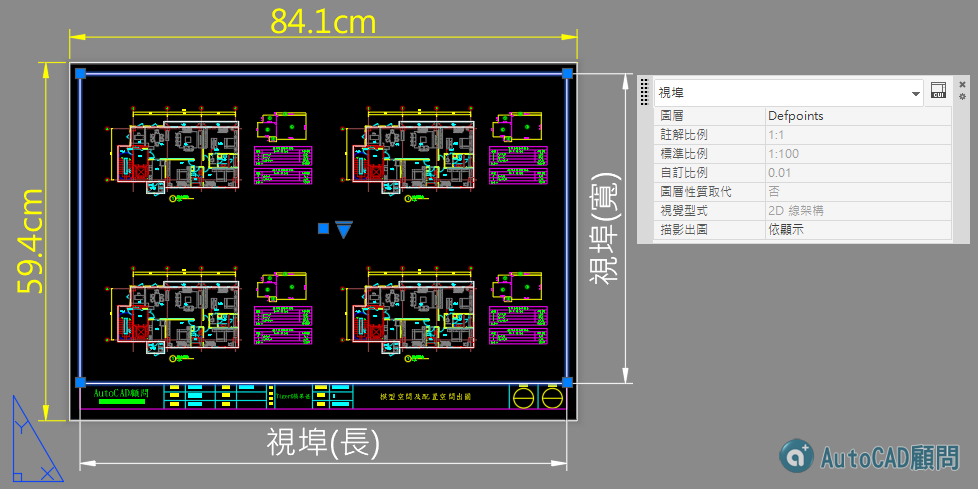
圖紙尺寸為 A1、出圖比例 為 10(公釐) : 1(單位)。
圖面比例(實際比例)為 1(公分)/1(單位) x 1/100(視埠) = 1/100
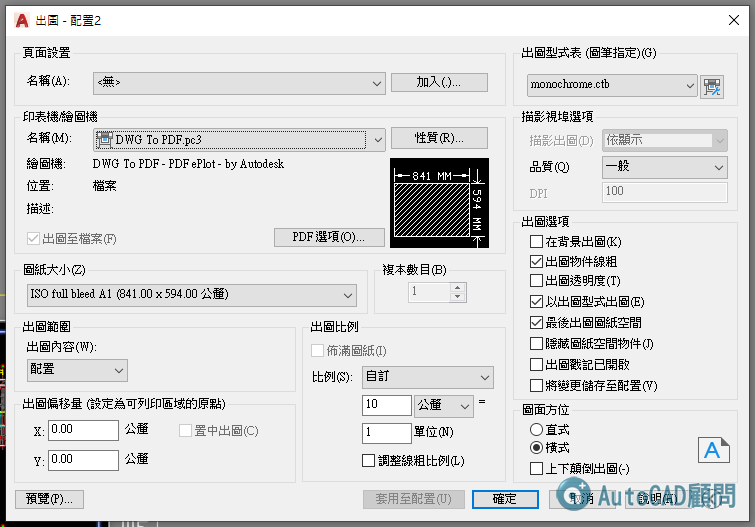

■關於 圖面單位(UNITS) 的設定方式，一旦決定了圖面單位，便需要指定圖面單位的顯示型式，包括單位類型與精確度。
例如，值 24.5 可以顯示為 24.50 或 24.5000 。可以使用 UNITS 指令指定圖面單位的顯示型式。
預設圖面單位類型是十進位、長度精確度 小數點4位、角度精確度 小數點0位，插入比例為 公釐。
而 圖面單位(UNITS) 中的 插入比例 是控制插入目前圖面中的圖塊和圖面的測量單位。
並不是更改圖面單位(圖面單位須自行定義)，這部份常常有人搞錯，因為圖面單位(UNITS)的插入比例關係，會影響插入圖塊時的比例係數。
例:一般圖面的 插入比例 是由使用者決定，當你定義了圖面單位(UNITS)的 插入比例 後，系統會自動計算比例係數，
當 A.dwg(原始來源圖面);圖面單位(UNITS)的插入比例為 公分，而 B.dwg (目標圖面)
圖面單位(UNITS)的插入比例為 公釐，當 B.dwg (目標圖面) 插入或外部參考 A.dwg (原始來源圖面)時，此時比例係數則為 10 ，
也就是說 插入INSERT 進來的 A.dwg 的圖面物件，在 B.dwg 的圖面中會自動放大10倍。
********************************************
可以說是出圖比例，但是出圖時需依照當初決定的圖框尺寸，才是正確的圖面比例(出圖比例)~
但是有很多細微的地方(配置與模型出圖)會有所影響，這也是大多數人卡住的地方，需要先有完整的觀念就會比較快上手!
AutoCAD圖檔中的圖框為A1(841mmx594mm)，圖面比例為1/100(單位mm)，視埠比例為1/100。
>> 在配置出圖時，圖紙為A1，出圖比例為 1(公釐):1(單位) ----- 圖面比例(實際比例)為 1/1 x 1/100(視埠) = 1/100
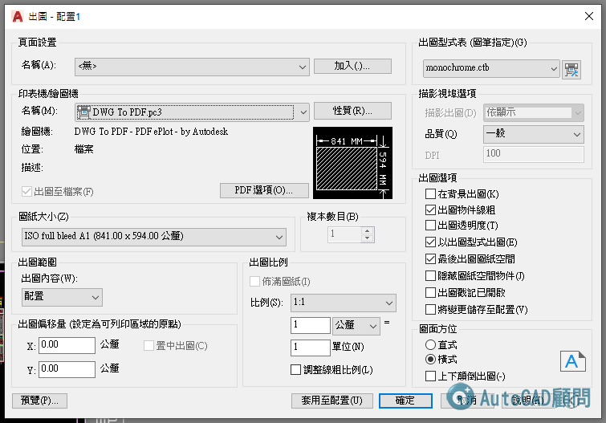
>> 在模型出圖時，圖紙為A1，出圖比例為 1(公釐):100(單位) ----- 圖面比例(實際比例)為 1/100
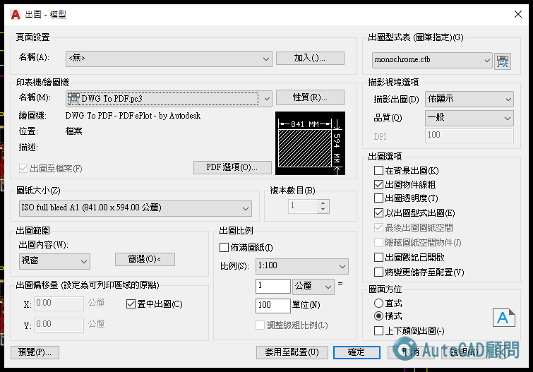
說明:在配置出圖時，「圖面比例」並不等於「出圖比例」。在模型出圖時，「圖面比例」即等於「出圖比例」。
AutoCAD圖檔中的圖框為A1(841mmx594mm)，圖面比例為1/100(單位mm)，視埠比例為1/100。
>> 在配置出圖時，圖紙為A3，出圖比例為 1(公釐):2(單位) ----- 圖面比例(實際比例)為 1/2 x 1/100(視埠) = 1/200
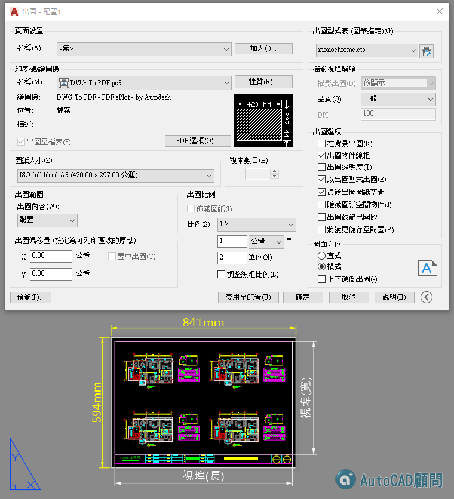
>> 在模型出圖時，圖紙為A3，出圖比例為 1(公釐):200(單位) ----- 圖面比例(實際比例)為 1/200
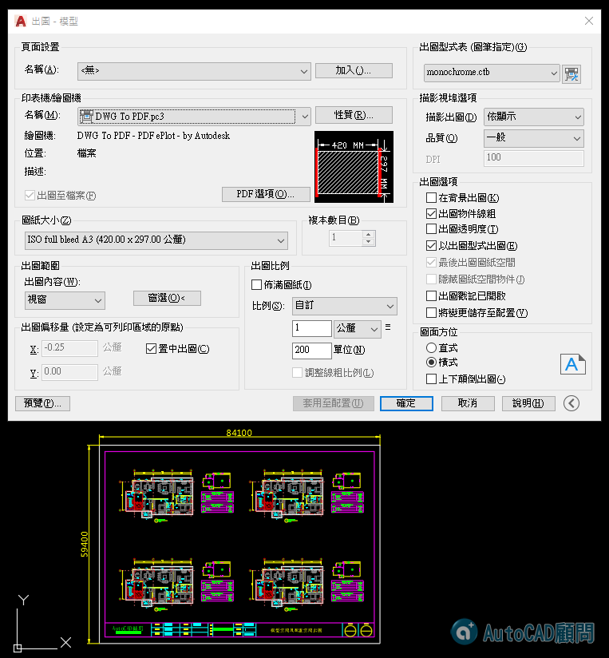
說明:在配置出圖時，「圖面比例」並不等於「出圖比例」。在模型出圖時，「圖面比例」即等於「出圖比例」。
因為未來出描圖紙及藍曬藍圖時是以A1圖紙，但是在未正式出圖時，公司內部審核圖面時都是已A3圖紙，而 A1圖紙 的長寬比為 A3圖紙 的2倍，所以當輸出尺寸為 A3圖紙時，在配置出圖出圖比例為 1(公厘):2(單位)，所以圖面比例(實際比例)換算為 1/200。
1.延伸範例主題： [觀念]規劃圖面單位及圖面比例
2.延伸範例主題： [測驗題]標準作業：A1圖框製作、樣版檔設定(一)
3.延伸範例主題： [測驗題]標準作業：A1圖框樣版檔規劃(二)
4.延伸範例主題： [測驗題]標準作業：A1圖框二種標註比例圖面(三)
5.延伸範例主題： [進階]AutoCAD巨集－建立視埠+設定比例+鎖護視埠
6.延伸範例主題： [進階]工具選項板+標準A1屬性圖框設置
7.延伸範例主題： [私房教學1-5]AutoCAD配置空間分圖作業